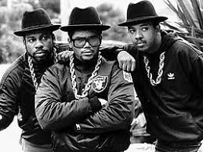

The Early Stages

The Golden Era
The Current Status of Today 
Hip Hop through the late 70's and mid
80's were the early stages for Hip Hop. These were the times when Hip Hop was seen as a commercial music
like pop. Which has always been in rap culture. But in Hip Hop culture it was always underground
and not made for the radio. During this time everybody wanted to be
Hip Hop. The stars during this time were RUN DMC and Sugarhill Gang.
The "Golden Era" of Hip Hop was from the mid 80's to early 90's. This was a time when Hip Hop was
at it's peak of success, quality, diversity, and creativity. The MC's(Rappers)were at there best. Using there
wit and creativity to create memorable rap lyrics. The two mega stars of this time were Biggie and Tupac.
These two made an impact to Hip Hop that has shaped and touched every rapper, artist, and person in general.
During this time "Underground Hip Hop" was also making waves through the Hip Hop community Names like Gang Starr, Nas, Wu-Tang Clan, A Tribe Called Quest, Big L, Common,
Black Thought, and many more were also heavily impacting Hip Hop culture, but not through the mainstream. The "Golden Era" was a crucial and very powerful time for Hip Hop.
The current status of hip hop is very commerical. Hip Hop has gone in a different direction than the 90's.
Since the golden era there have been many legends lost and new faces. People like lil wayne, eminem, 50 cent.
That pioneered 2000's rap. This then led to rappers making songs about girls, money, and fame.
We now live in the mumble rap era. Where trap music rules the hip hop charts.
There are lots of mumble rappers that are synonomous with mumble rap. Rappers like lil yachty, playboi carti,
lil uzi vert, lil pump and more. On the other hand there are so many options in rap. Like rap rock, edgy rap,
emo rap, trap, mumble rap, and old rap.
Today's rap can definitley improve but hip hop can use another rise of lyrical MC's.